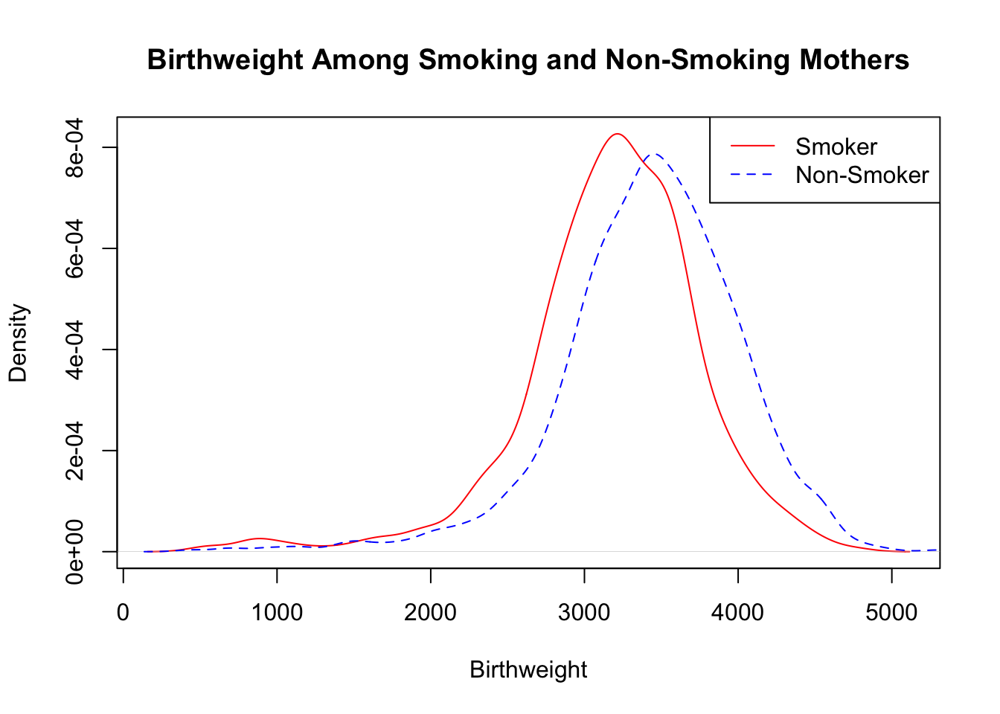
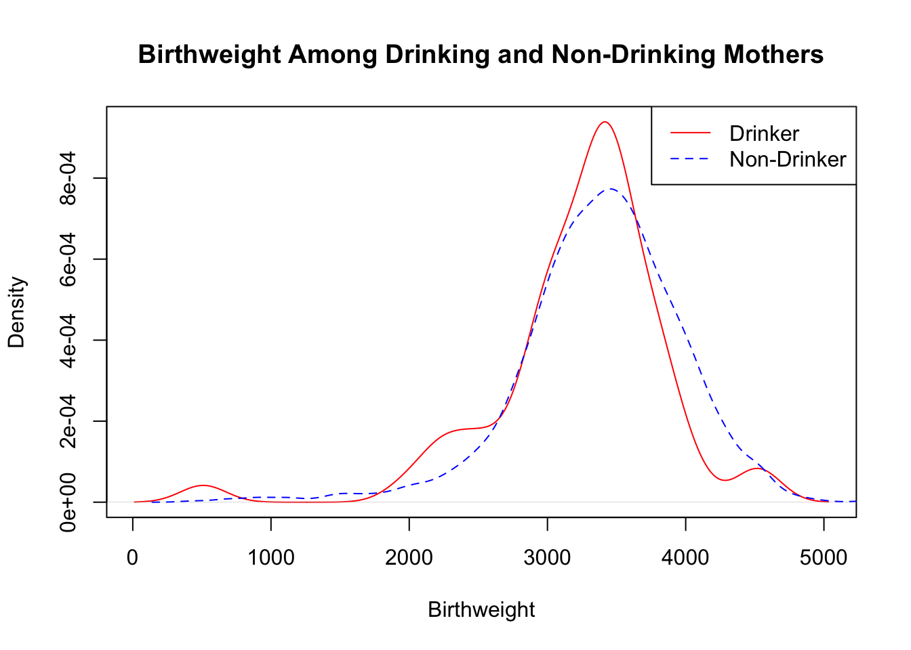
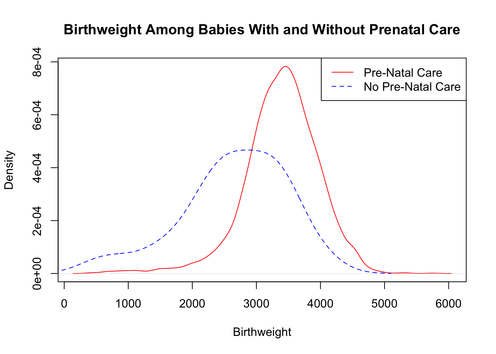
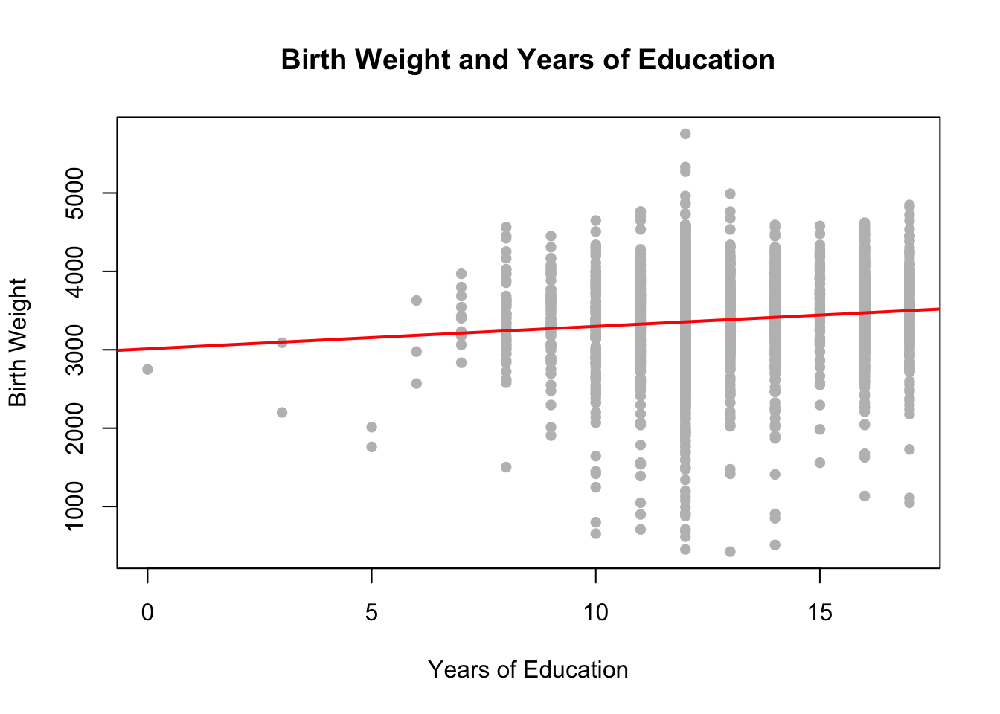

## Load Stargazer package for summary statistics and regression tables
library(stargazer)
## Load Applied Econometrics package (see above for installing AER package)
library(AER)
#**********************************************************************************************
# 2. LOAD DATA
## Load data set on income and height
mydata1=read.csv(file="tute6_smoke.csv")Part A
Getting Started
Please create a Tutorial6 folder on your computer, and then go to the LMS site for ECOM20001 and download the following files into the Tutorial6 folder:
tute6.R
tute6_smoke.csv
The first file is the R code for tutorial 6. The second file is a micro data set1 with the following 13 variables:
| id | baby identifier |
| birth weight | baby’s birth weight in grams |
| smoker | equals one if the mother is a smoker, 0 otherwise |
| alcohol | equals one if the mother drank alcohol during pregnancy, 0 otherwise |
| drinks | number of drinks per week during pregnancy |
| nprevisit | total number of prenatal visits |
| tripre1 | equals one if 1st prenatal care in 1st trimester, 0 otherwise |
| tripre2 | equals one if 1st prenatal care in 2nd trimester, 0 otherwise |
| tripre3 | equals one if 1st prenatal care in 3rd trimester, 0 otherwise |
| tripre0 | equals one if no prenatal visits, 0 otherwise |
| unmarried | equals one if the mother is unmarried, 0 otherwise |
| educ | years of educational attainment of the mother |
| age | age of the mother |
In total, the data set contains this information for n=3000 babies and their mothers.
This dataset is from Almond, D and K. Chay (2005): “The Costs of Low Birth Weight,” Quarterly Journal of Economics, 120(3): 1031-1083
Part B
Having worked through the tute6.R code and graphs please answer the following questions.
**REMINDER: INSTALLING PACKAGES: To run the tute6.R code, you first must install the “AER” and “stargazer” packages in R using the install.packages() command in the console window in R Studio. Specifically, enter the following two lines into the console:
install.packages(“AER”)
install.packages(“stargazer”)
The “AER” package standards for “Applied Econometrics in R” and it is used to for computing heteroskedasticity-robust standard errors.
The “stargazer” package is used for creating nice regression output tables in R.
See the top of the tute6.R code for additional instructions on installing R packages and further descriptions of these packages and what they are used for. We also installed these in tute1.R.
Both packages are required for doing the remaining tutorials in ECOM20001, as well as assignments 2 and 3.
Part C
Baby Birthweight and Mothers Smoking
Q1
Compute sample means and standard deviations for birth weight, smoker, alcohol, nprevisit, unmarried, educ, and age. What does a typical observation look like in the sample?
Solution
## Summary Statistics
stargazer(mydata1,
summary.stat = c("n", "mean", "sd", "median", "min", "max"),
type="text", title="Descriptive ")
Descriptive
======================================================
Statistic N Mean St. Dev. Median Min Max
------------------------------------------------------
id 3,000 1,500.500 866.170 1,500.5 1 3,000
birthweight 3,000 3,382.934 592.163 3,420 425 5,755
smoker 3,000 0.194 0.395 0 0 1
alcohol 3,000 0.019 0.138 0 0 1
drinks 3,000 0.058 0.688 0 0 21
nprevisit 3,000 10.992 3.672 12 0 35
tripre1 3,000 0.804 0.397 1 0 1
tripre2 3,000 0.153 0.360 0 0 1
tripre3 3,000 0.033 0.179 0 0 1
tripre0 3,000 0.010 0.100 0 0 1
unmarried 3,000 0.227 0.419 0 0 1
educ 3,000 12.907 2.167 12 0 17
age 3,000 26.889 5.362 27 14 44
------------------------------------------------------Focusing on sample means, a typical observation is a baby that weighs 3383 with a mother who is a smoker 19% of the time, drinks alcohol 2% of the time, has 11 prenatal visits, is unmarried 23% of the time, has 12.9 years of educational attainment, and is 27 years old.
Note that smoker, alcohol, tripre1 , tripre2, tripre3 and unmarried are dummy variables taking the values [0,1] when interpreting the sample statistics for these variables.
## tip for creating a dummy variable
# if you want to create a dummy variable taking the value
# of 1 if birthweight is greater or equal to the median birthweight;
# 0 otherwise you could use
mydata1$bwt_dv <- 1*(mydata1$birthweight>=median(mydata1$birthweight))Q2
Plot the probability density for baby birth weight among smoking and nonsmoking mothers. Also conduct a two-sample t-test for the difference in the mean of birth weight among babies with smoking and non-smoking mothers.
Briefly interpret your results.
Solution
plot(density(mydata1$birthweight[mydata1$smoker==1]),
col="red",lty=1,main="Birthweight Among Smoking and Non-Smoking Mothers", xlab="Birthweight")
lines(density(mydata1$birthweight[mydata1$smoker==0]), col="blue",lty=2)
legend("topright", legend=c("Smoker", "Non-Smoker"),
col=c("red","blue"), lty=c(1,2))
The difference in probability densities highlights a leftward shift in the distribution of birth weight for mothers who smoke.
From the 2 sample t-tests, the difference in mean of birth weight among babies with smoking and non-smoking mothers is -253 grams, a difference that is statistically significant with a p-value less than 0.0001, and with a 95% CI [-306,-200].
It’s a large difference: the difference is 100 x 253/3383=7.5% of the sample mean.
# T-test of difference in birth weight for smokers and non-smokers
mean(mydata1$birthweight[mydata1$smoker==1])[1] 3178.832mean(mydata1$birthweight[mydata1$smoker==0])[1] 3432.06mean(mydata1$birthweight[mydata1$smoker==1])-mean(mydata1$birthweight[mydata1$smoker==0])[1] -253.2284t.test(mydata1$birthweight[mydata1$smoker==1],mydata1$birthweight[mydata1$smoker==0])
Welch Two Sample t-test
data: mydata1$birthweight[mydata1$smoker == 1] and mydata1$birthweight[mydata1$smoker == 0]
t = -9.4414, df = 887.15, p-value < 2.2e-16
alternative hypothesis: true difference in means is not equal to 0
95 percent confidence interval:
-305.8685 -200.5882
sample estimates:
mean of x mean of y
3178.832 3432.060 Q3
Evaluate the potential for omitted variable bias in a single linear regression of birth weight on smoker.
Alcohol: Plot the probability density for baby birth weight among mothers who drink alcohol and who do not drink alcohol during their pregnancy. Also conduct a two-sample t-test for the difference in the mean of alcohol among babies with smoking and non-smoking mothers.
Pre-Natal Care: Plot the probability density for baby birth weight among mothers who had prenatal care and who did not have prenatal care during the pregnancy. Also conduct a two-sample t-test for the difference in the mean of tripre0 among babies with smoking and non-smoking mothers.
Education: Plot a scatter plot with years of educational attainment of the mother on the horizontal axis, and birth weight on the vertical axis. Also conduct a two-sample t-test for the difference in the mean of educ among babies with smoking and non-smoking mothers.
Based on your results, explain the direction of the bias of the OLS estimate of the coefficient on smoker in the following single linear regression:
\[ birthweight_i = \beta_0+\beta_1\, smoker_i + u_i \]
Solution
plot(density(mydata1$birthweight[mydata1$alcohol==1]),
col="red",lty=1,main="Birthweight Among Drinking and Non-Drinking Mothers", xlab="Birthweight")
lines(density(mydata1$birthweight[mydata1$alcohol==0]), col="blue",lty=2)
legend("topright", legend=c("Drinker", "Non-Drinker"),
col=c("red","blue"), lty=c(1,2))
Alcohol: The difference in probability densities highlights a leftward shift in the distribution of birth weight for mothers who drink alcohol.
From the two-sample t-tests, the difference in mean of alcohol between smoking and non-smoking mothers is 0.042 (4.2% higher chance of drinking alcohol during pregnancy if a mother smokes), a statistically significant difference with a p-value less than 0.0001.
# T-test of difference in drinking for smokers and non-smokers
mean(mydata1$alcohol[mydata1$smoker==1])
## [1] 0.0532646
mean(mydata1$alcohol[mydata1$smoker==0])
## [1] 0.01116625
mean(mydata1$alcohol[mydata1$smoker==1])-mean(mydata1$alcohol[mydata1$smoker==0])
## [1] 0.04209835
t.test(mydata1$alcohol[mydata1$smoker==1],mydata1$alcohol[mydata1$smoker==0])
##
## Welch Two Sample t-test
##
## data: mydata1$alcohol[mydata1$smoker == 1] and mydata1$alcohol[mydata1$smoker == 0]
## t = 4.4043, df = 643.34, p-value = 1.243e-05
## alternative hypothesis: true difference in means is not equal to 0
## 95 percent confidence interval:
## 0.02332896 0.06086774
## sample estimates:
## mean of x mean of y
## 0.05326460 0.01116625plot(density(mydata1$birthweight[mydata1$tripre0==0]),
col="red",lty=1,main="Birthweight Among Babies With and Without Prenatal Care", xlab="Birthweight")
lines(density(mydata1$birthweight[mydata1$tripre0==1]), col="blue",lty=2)
legend("topright", legend=c("Pre-Natal Care", "No Pre-Natal Care"),
col=c("red","blue"), lty=c(1,2))
Prenatal Care: The difference in probability densities highlights a rightward shift in the distribution of birth weight for mothers who have pre-natal care.
From the two-sample t-tests, the difference in mean of tripre0 between smoking and non-smoking mothers is 0.015 (1.5% higher chance of no prenatal care if a mother smokes), a statistically significant difference with a p-value less than 0.016.
# T-test of difference in prenatal care for smokers and non-smokers
mean(mydata1$tripre0[mydata1$smoker==1])
## [1] 0.02233677
mean(mydata1$tripre0[mydata1$smoker==0])
## [1] 0.007030604
mean(mydata1$tripre0[mydata1$smoker==1])-mean(mydata1$tripre0[mydata1$smoker==0])
## [1] 0.01530617
t.test(mydata1$tripre0[mydata1$smoker==1],mydata1$tripre0[mydata1$smoker==0])
##
## Welch Two Sample t-test
##
## data: mydata1$tripre0[mydata1$smoker == 1] and mydata1$tripre0[mydata1$smoker == 0]
## t = 2.4059, df = 672.77, p-value = 0.0164
## alternative hypothesis: true difference in means is not equal to 0
## 95 percent confidence interval:
## 0.002814408 0.027797924
## sample estimates:
## mean of x mean of y
## 0.022336770 0.007030604# Scatterplot between birth weight and education with line of best fit
birthweight_educ_reg=lm(birthweight~educ,data=mydata1)
plot(mydata1$educ,mydata1$birthweight,
main="Birth Weight and Years of Education",
xlab="Years of Education",
ylab="Birth Weight",
col="grey",
pch=16)
abline(birthweight_educ_reg, col="red", lwd=2)
Education: The scatter plot indicates a positive relationship between education and birth weight.
From the two-sample t-tests, the difference in mean of educ between smoking and non-smoking mothers is -1.27 (1.27 less years of educational attainment if a mother smokes), a statistically significant difference with a p-value less than 0.0001.
# T-test of difference in education for smokers and non-smokers
mean(mydata1$educ[mydata1$smoker==1])
## [1] 11.87973
mean(mydata1$educ[mydata1$smoker==0])
## [1] 13.15426
mean(mydata1$educ[mydata1$smoker==1])-mean(mydata1$educ[mydata1$smoker==0])
## [1] -1.274535
t.test(mydata1$educ[mydata1$smoker==1],mydata1$educ[mydata1$smoker==0])
##
## Welch Two Sample t-test
##
## data: mydata1$educ[mydata1$smoker == 1] and mydata1$educ[mydata1$smoker == 0]
## t = -15.8, df = 1164.7, p-value < 2.2e-16
## alternative hypothesis: true difference in means is not equal to 0
## 95 percent confidence interval:
## -1.432801 -1.116268
## sample estimates:
## mean of x mean of y
## 11.87973 13.15426Potential sources of omitted variable bias in the single linear regression model \(birthweight_i=\beta_0+\beta_1\, smoker_i+u_i\) :
Interpretation
Alcohol: alcohol is positively related to smoking and negatively related to birth weight. Therefore, the OLS slope coefficient estimate will be downward biased, or too negative relative to the population coefficient for the impact of smoking on birth weight. The OLS estimate captures this direct effect, AND the facts that smokers tend to drink alcohol more and drinking alcohol reduces birth weight.
Prenatal Care: pre-natal care is negatively related to smoking and positively related to birth weight. Therefore, the OLS slope coefficient estimate will be downward biased, or too negative relative to the population coefficient for the impact of smoking on birth weight. The OLS estimate captures this direct effect, AND the facts that smokers tend to have less prenatal care and prenatal care increases birth weight.
Education: education is negatively related to smoking and positively related to birth weight. Therefore, the OLS slope coefficient estimate will be downward biased, or too negative relative to the population coefficient for the impact of smoking on birth weight. The OLS estimate captures this direct effect, AND the facts that smokers tend to have less education and education increases birth weight.
Q4
Estimate the single linear regression of birth weight on smoker from question 3 under homoskedasticity and heteroskedasticity. Briefly comment on any impacts on OLS coefficient estimates and standard errors.
Solution
# Single linear regression results relating birth weight and smoking,
# assuming homoskedasticity
reg1=lm(birthweight~smoker,data=mydata1)
summary(reg1)
Call:
lm(formula = birthweight ~ smoker, data = mydata1)
Residuals:
Min 1Q Median 3Q Max
-3007.06 -313.06 26.94 366.94 2322.94
Coefficients:
Estimate Std. Error t value Pr(>|t|)
(Intercept) 3432.06 11.87 289.115 <2e-16 ***
smoker -253.23 26.95 -9.396 <2e-16 ***
---
Signif. codes: 0 '***' 0.001 '**' 0.01 '*' 0.05 '.' 0.1 ' ' 1
Residual standard error: 583.7 on 2998 degrees of freedom
Multiple R-squared: 0.0286, Adjusted R-squared: 0.02828
F-statistic: 88.28 on 1 and 2998 DF, p-value: < 2.2e-16# Single linear regression results relating birth weight and smoking,
# allowing for heteroskedasticity
coeftest(reg1, vcov = vcovHC(reg1, "HC1"))
t test of coefficients:
Estimate Std. Error t value Pr(>|t|)
(Intercept) 3432.060 11.891 288.6380 < 2.2e-16 ***
smoker -253.228 26.810 -9.4452 < 2.2e-16 ***
---
Signif. codes: 0 '***' 0.001 '**' 0.01 '*' 0.05 '.' 0.1 ' ' 1# report the adjusted R-Squared from the regression
summary(reg1)$adj.r.squared # report the adjusted R-Squared from the regression[1] 0.02827979Regression results under homoskedasticity :
\[\begin{align} \widehat{birthweight}_i & = 3432.06-253.23 \, smoker_i \qquad SER=584, \, R^2=0.028 \\ & \quad (11.87) \qquad (26.95) \notag \end{align}\]
Regression results under heteroskedasticity:
\[\begin{align} \widehat{birthweight}_i & = 3432.06-253.23 \, smoker_i \qquad SER=584, \, R^2=0.028 \\ & \quad (11.89) \qquad (26.81) \notag \end{align}\]
Throughout, I have elected to not rescale the birth weight variable because it is easier and more appropriate to interpret birth weight in terms of grams, as opposed to decimal values of kilograms (say if we scaled birth weight by a factor of 1000).
There’s a relatively small impact on the standard errors across the two models. The OLS coefficient estimates, SER and adjusted R-squared are of course unchanged because assuming homoskedasticity vs. heteroskedasticity is irrelevant for their calculation.
Interpreting the coefficient of interest, we find smoking mothers have babies that are 253.23 grams lighter, a statistically significant estimate with a p-value less than 0.0001.
Note that this number corresponds exactly to the difference in mean birth weight between smoking and non-smoking mothers in question 2 above. This occurs because dummy variable coefficient estimates correspond to differences in means between the two groups defined by the dummy variable in a single linear regression model.
Estimate the single linear regression of birth weight on smoker from question 3 under homoskedasticity and heteroskedasticity. Briefly comment on any impacts on OLS coefficient estimates and standard errors.
\[\begin{align}E[Y_i|D_{\text{smoker}_i}] & = \underbrace{\beta_0+ \beta_1\, D_{\text{smoker}_i}}_{\mu_{smoker}} \tag{1} \\E[Y_i|D_{\text{nosmoker},i}] & = \underbrace{\beta_0}_{\mu_{nonsomker}} \tag{2} \\(1)-(2) & = \underbrace{\beta_0+ \beta_1\, D_{\text{smoker},i}}_{\mu_{smoker}} - \underbrace{\beta_0}_{\mu_{nonsmoker}} \\ & = \beta_1\, D_{\text{smoker},i}\\ \Rightarrow & H_0:\beta_1\, D_{smoker_i}=0 \\ \Leftrightarrow & H_0: \mu_{smoker} - \mu_{nonsmoker} = 0\end{align}\]
Q5
Estimate four multiple linear regression models with birth weight as the dependent variable, and the following four respective sets of regressors:
smoker
smoker, alcohol, drinks
smoker, alcohol, drinks, nprevisit, tripre1, tripre2, tripre3
smoker, alcohol, drinks, nprevisit, tripre1, tripre2, tripre3, age, educ, unmarried
In each of the 4 models, report heteroskedasticity-robust standard errors.
For each model, interpret the OLS coefficient estimate on the variable of interest, smoker, and briefly comment on how adding regressors removes omitted variable bias. Also comment on how adding regressors affects the model’s adjusted R-squared.
Solution
Run the following R code chunks
# Single linear regression with no other controls
# save regression results for reg1
reg1=lm(birthweight~smoker,data=mydata1)
# next 2 lines save the robust standard errors for reg1
cov1=vcovHC(reg1, type = "HC1")
se1=sqrt(diag(cov1))
# do the same for reg2-4
reg2 =lm(birthweight~smoker+alcohol+drinks
,data=mydata1)
cov2=vcovHC(reg2, type = "HC1")
se2=sqrt(diag(cov2))
reg3 =lm(birthweight~smoker+alcohol+drinks+nprevisit+
tripre1+tripre2+tripre3
,data=mydata1)
cov3=vcovHC(reg3, type = "HC1")
se3=sqrt(diag(cov3))
reg4 =lm(birthweight~smoker+alcohol+drinks+nprevisit+
tripre1+tripre2+tripre3+
age+educ+unmarried
,data=mydata1)
cov4=vcovHC(reg4, type = "HC1")
se4=sqrt(diag(cov4))
# run reg4 again NOT accountng for heteroskedasticty
reg5 =lm(birthweight~smoker+alcohol+drinks+nprevisit+
tripre1+tripre2+tripre3+
age+educ+unmarried
,data=mydata1)
cov5=vcovHC(reg4, type = "const")
se5=sqrt(diag(cov5))then use stargazer to compile the regression results in one table using the following:
stargazer(reg1, reg2, reg3, reg4, reg5, type="text",
se=list(se1, se2, se3, se4, se5),
digits=2,
dep.var.labels=c("Baby Birthweight in Grams"),
covariate.labels=
c("Smoker",
"Drinks Alcohol During Pregnancy",
"Drinks per Week During Pregnancy",
"Prenatal Visits",
"Prenatal Care in 1st Trimester",
"Prenatal Care in 2nd Trimester",
"Prenatal Care in 3rd Trimester",
"Age",
"Years of Education",
"Unmarried",
"Constant"),
out="reg_output.txt") # Output results to your directory in a text file| Dependent variable: | |||||
| Baby Birthweight in Grams | |||||
| (1) | (2) | (3) | (4) | (5) | |
| Smoker | -253.23*** | -250.40*** | -218.76*** | -178.21*** | -178.21*** |
| (26.81) | (26.88) | (25.99) | (27.21) | (27.44) | |
| Drinks Alcohol During Pregnancy | -21.29 | 1.12 | 3.94 | 3.94 | |
| (98.78) | (90.36) | (90.75) | (94.67) | ||
| Drinks per Week During Pregnancy | -12.08 | -5.40 | -3.03 | -3.03 | |
| (18.85) | (17.16) | (16.43) | (18.86) | ||
| Prenatal Visits | 33.79*** | 32.09*** | 32.09*** | ||
| (4.30) | (4.25) | (3.41) | |||
| Prenatal Care in 1st Trimester | 299.98* | 209.53 | 209.53* | ||
| (155.54) | (148.87) | (112.34) | |||
| Prenatal Care in 2nd Trimester | 310.43** | 268.82* | 268.82** | ||
| (154.06) | (146.65) | (110.85) | |||
| Prenatal Care in 3rd Trimester | 416.53** | 385.35** | 385.35*** | ||
| (162.49) | (155.44) | (119.05) | |||
| Age | -2.14 | -2.14 | |||
| (2.46) | (2.27) | ||||
| Years of Education | 1.83 | 1.83 | |||
| (5.54) | (5.56) | ||||
| Unmarried | -206.86*** | -206.86*** | |||
| (31.30) | (28.80) | ||||
| Constant | 3,432.06*** | 3,432.63*** | 2,751.84*** | 2,923.52*** | 2,923.52*** |
| (11.89) | (11.94) | (146.15) | (159.57) | (131.86) | |
| Observations | 3,000 | 3,000 | 3,000 | 3,000 | 3,000 |
| R2 | 0.03 | 0.03 | 0.08 | 0.09 | 0.09 |
| Adjusted R2 | 0.03 | 0.03 | 0.07 | 0.09 | 0.09 |
| Residual Std. Error | 583.73 (df = 2998) | 583.83 (df = 2996) | 569.66 (df = 2992) | 564.65 (df = 2989) | 564.65 (df = 2989) |
| F Statistic | 88.28*** (df = 1; 2998) | 29.73*** (df = 3; 2996) | 35.51*** (df = 7; 2992) | 30.94*** (df = 10; 2989) | 30.94*** (df = 10; 2989) |
| Note: | p<0.1; p<0.05; p<0.01 | ||||
Regression results for the models produced by stargazer() are presented in the table above. Each column corresponds to a regression model, where we progressively add control variables. See the tute6.R code for comments on what the stars mean next to the coefficients in the table.
Interpretation
We see that:
including the additional controls particularly in columns (3) and (4) have substantial, magnitude-reducing impacts on the OLS coefficient estimate on smoker, which is consistent with our preliminary analysis of omitted variable bias in Q3 above.
the R-Squared in the model grows from 0.03 in column (1) to 0.09 in column (4); adding the covariates has a large impact on the ability of the regression model to predict birth weight. However, there remains a substantial degree of unexplained birth weight even in model (4).
Interpreting our main finding in column (4), we would conclude that smoking mothers have babies that are 178 grams lighter, which remains a large effect at 100 x 178/3383=5.26% reduction in birth weight relative to the sample mean for birth weight.
Q6
library(huxtable)
library(lmtest)
library(haven)
library(sandwich)
lm_robust <- coeftest(reg4, vcov. = vcovHC(reg4, type = 'HC1'))
huxreg("Model 4" = lm_robust, "Model 5" = reg5,bold_signif = 0.10,stars = c(`***` = 0.01, `**` = 0.05,`*`=0.10))Original model not retained as part of coeftest object. For additional model summary information (r.squared, df, etc.), consider passing `glance.coeftest()` an object where the underlying model has been saved, i.e.`lmtest::coeftest(..., save = TRUE)`.
This message is displayed once per session.| Model 4 | Model 5 | |
|---|---|---|
| (Intercept) | 2923.515 *** | 2923.515 *** |
| (159.574) | (131.859) | |
| smoker | -178.207 *** | -178.207 *** |
| (27.206) | (27.436) | |
| alcohol | 3.942 | 3.942 |
| (90.753) | (94.675) | |
| drinks | -3.027 | -3.027 |
| (16.427) | (18.861) | |
| nprevisit | 32.087 *** | 32.087 *** |
| (4.250) | (3.406) | |
| tripre1 | 209.527 | 209.527 * |
| (148.873) | (112.336) | |
| tripre2 | 268.819 * | 268.819 ** |
| (146.655) | (110.849) | |
| tripre3 | 385.345 ** | 385.345 *** |
| (155.436) | (119.054) | |
| age | -2.143 | -2.143 |
| (2.457) | (2.270) | |
| educ | 1.828 | 1.828 |
| (5.537) | (5.562) | |
| unmarried | -206.856 *** | -206.856 *** |
| (31.295) | (28.795) | |
| N | 3000 | 3000 |
| R2 | 0.094 | |
| logLik | -23259.905 | -23259.905 |
| AIC | 46543.810 | 46543.811 |
| *** p < 0.01; ** p < 0.05; * p < 0.1. | ||
Re-report OLS coefficient estimates and standard errors for the fourth regression model in Q5. that includes the full list of regressors, except report standard errors assuming homoskedasticity.
Briefly comment on the difference in standard errors and p-values for your regression coefficients under heteroskedasticity and homoskedasticity.
Solution
Column (5) of the table contains the results assuming homoskedasticity.
Again, as expected, the OLS coefficient estimates and R-Squared is identical to those in column (4) which reports heteroskedasticity-robust standard errors.
There are some changes, however, in the standard errors reflecting the fact the we are erroneously not accounting for heteroskedasticity in the data in column (5).
In fact, we can see that the dummy variable for “Prenatal Care in 1st Trimester” incorrectly becomes statistically significantly different from 0 at the 10% level in column (5) when we fail to account for heteroskedasticity.